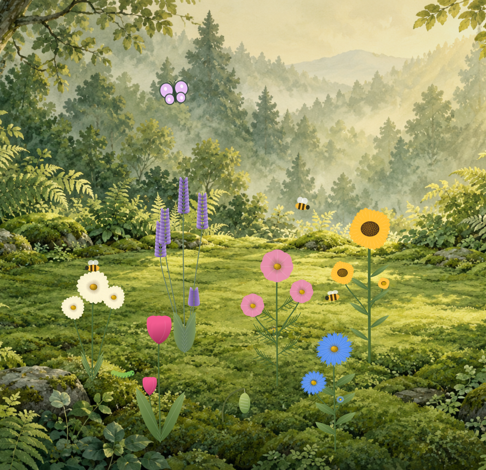

Start with a seed.
Ten flower varieties, each with its own shape and growth habit. Let them take their time, or give a favorite bloom a gentle fast-forward.
A SMALL WORLD, ALWAYS GROWING
A living garden that stays above your desktop. Plant something. Watch the light change. Let a small, quiet world keep you company.
Free & open source · Mac, Windows, Linux & Web · No account or tracking
A labor of love by Paradoxical Software ↗
SOMETHING SMALL. SOMETHING ALIVE.
Stillgarden is a garden for Mac, Windows, Linux and the web with a simple idea: a small green space can be a welcome invitation to pause. Pin it above your apps, hide the controls, and let it quietly grow.
Ten flower varieties, each with its own shape and growth habit. Let them take their time, or give a favorite bloom a gentle fast-forward.
Bees drift between flowers. Caterpillars become butterflies. As the garden grows dark, the pollinators settle down to sleep.
Birdsong, a distant owl, rain and wind. Set the volume that feels right—or enjoy the whole garden in silence.
Sunlight gives way to dusk. Rain arrives, lightning branches across the sky, and thunder follows from a little farther away.
Snow settles on the ground and flowers, stays through the cold, and melts gradually when warmth returns. Seasons can follow your calendar.
Reveal controls at the edge, arrange gentle visits, or triple-click the sky for God mode. A fresh start is always available, with undo.
A WINDOW INTO YOUR GARDEN
Follow your system clock, hold a favorite hour, or let a whole day unfold in a minute.
Actual app views, rendered with demonstration gardens.
Your garden will grow differently.
A little sunlight, wherever you work.
MADE WITH CARE. SHARED FREELY.
We made Stillgarden to offer a small, unhurried place in the middle of a busy screen. We're sharing it in support of mental health and the everyday practice of making space for yourself.
There is no habit to maintain, no progress to compete over, and no account to create. Take what feels helpful. Leave the rest.
Stillgarden is a creative wellness project, not medical treatment or a substitute for professional care.
Meet Paradoxical Software →YOUR GARDEN IS WAITING
Native Mac app, Windows installer, Linux AppImage and Debian package. Or step straight into the web garden.
Get StillgardenChoose the download for your operating system from GitHub Releases.
Install your desktop edition, or open the garden in your browser.
Pin it, mute it, speed up time, or just let it be.
Community release: Mac is not Apple-notarized; Windows is unsigned. Your system may show a first-launch warning. Read the installation notes or build from source. Web gardens stay in their tab. Wayland pinning depends on your window manager. Platform details.
A star helps others discover Stillgarden. A thoughtful issue, a small contribution, or a little kindness helps it grow.